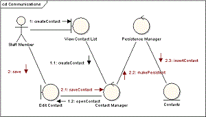
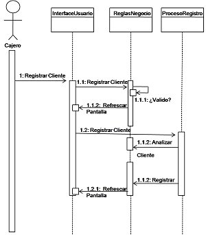

| N° |
Nombre |
Definición |
Imagen |
| 01 |
Algoritmos |
Es un procedimiento detallado que se realiza para resolver un problema dentro de un espacio de tiempo. Los de tipo informal son normalmente usados por el hombre en su vida diaria.
Por su parte, un algoritmo computacional es un término usado con frecuencia en la programación informática. Parte de un estado inicial hacia un estado final, el cual contiene la
solución de un problema. A este resultado final, se llega mediante el seguimiento de pasos sucesivos y bien definidos. Su ejecución requiere el uso de computadoras. |
|
| 02 |
Alternativa Simple |
La estructura alternativa simple si-entonces (en inglés if-then) ejecuta una determinada acción cuando se cumple una determinada condición
|
|
| 03 |
Analista |
Es un individuo capacitado para dar un informe de datos detallados sobre un tema en específico relacionado a una empresa o un sistema
|
|
| 04. |
ANSI |
El Instituto Nacional Estadounidense de Estándares, más conocido como ANSI (por sus siglas en inglés: American National Standards Institute), es una organización sin
fines de lucro que supervisa el desarrollo de estándares para productos, servicios, procesos y sistemas a nivel internacional
|
|
| 05 |
Antivirus |
Es un tipo de software que se utiliza para evitar, buscar, detectar y eliminar virus de una computadora. Una vez instalados, la mayoría de los software antivirus se ejecutan automáticamente en segundo plano para brindar protección en tiempo real contra ataques de virus.
Los programas integrales de protección contra virus ayudan a resguardar tus archivos y hardware de malware, como gusanos, troyanos y programas espía, y además pueden ofrecer protección adicional, como barreras de protección (firewall) personalizables y bloqueos de sitios web.
|
|
| 06 |
Análisis |
Proceso en el que se identifican los elementos de un computador y sus posibles problemas, haciendo uso de la verificación entre software y hardware
para lograr llegar a una solución. |
 |
|
Apache |
Es un acrónimo de «a patchy server»es un servicio de páginas web HTTP de código abierto que sirve para colocar varias plataformas como Unix, BSD, GNU/Linux, Windows, Macintosh entre otros que implementan el protocolo HTTP y el conocimiento o conceptos de sitios virtual y se basó
inicialmente en el código NCSA HTTP.
|
| 07 |
Archivo |
Es un elemento que almacena un conjunto de datos para su posterior uso. Estos elementos normalmente no son visibles para el usuario, además de que no son útiles por sí solos. Todos los datos que conforman un archivo son imprescindibles para el mismo, y solo tienen utilidad
para el usuario final si se encuentran dentro del archivo.
|
|
| 08 |
Archivo Zip |
Es un formato de compresión de archivos sin pérdidas muy usados en la informática. Este formato se emplea para comprimir archivos como ejecutables, dll, imágenes, videos y casi cualquier tipo de fichero.
|
 |
| 09 |
Arreglos bidimensionales |
Un arreglo bidimensional es un arreglo con dos índices, esto para localizar o almacenar un valor en el arreglo, por tal motivo se deben especificar dos posiciones (dos subíndices), uno para la fila y
otro para la columna, a este tipo de arreglos indistintamente se les llama tablas o matrices
|
 |
| 10 |
ASME |
La Society of Mechanical Engineers, más conocida como ASME, es una asociación de profesionales fundada en 1880, con la idea de generar una serie de códigos de diseño para la construcción, pruebas e inspección de bienes de equipo industriales. Entre estos equipos se encuentran los recipientes a presión. |
|
| 11 |
ASP.NET |
Es un entorno para aplicaciones web desarrollado y comercializado por Microsoft. Los programadores o también diseñadores pueden utilizar este framework para construir sitios web dinámicos, aplicaciones web y servicios web.
|
 |
| 12. |
Autoaprendizaje |
Se trata de un proceso de adquisición de conocimientos, habilidades, valores y actitudes, que la persona realiza por su cuenta ya sea mediante el estudio o la experiencia.
|
|
| 13. |
Aws |
abreviación de Amazon web service. Es una plataforma integral de computación en la nube que incluye ofertas de infraestructura como servicios (lasS) y la
plataforma como servidor (PaaS)
|
|
| 14. |
Back-end |
Abarca todo el área lógica de una página web, esto hace referencia a la arquitectura interna del sitio que se asegura de que todos los elementos
desarrollen una correcta optimización de recursos y funcionamientos, este tipo de programación no es visible para los usuarios y no cuenta con
gráficos
|
|
| 15 |
Bases de datos |
Una base de datos hace referencia al conjunto de datos o informaciones determinadas que se pueden consultar de manera ágil, y segmentando las características que se quieran
destacar para concretar más la información que se pretende revisar.
|
 |
| 16 |
Bit |
Abarca todo el área lógica de una página web, esto hace referencia a la arquitectura interna del sitio que se asegura de que todos los elementos
desarrollen una correcta optimización de recursos y funcionamientos, este tipo de programación no es visible para los usuarios y no cuenta con gráficos.
|
 |
| 17 |
Byte |
Conjunto de 8 bits que recibe el tratamiento de una unidad y que constituye el mínimo elemento de memoria direccional de una computadora.
|
|
| 18 |
C++ |
Es un lenguaje de programación que proviene de la extensión del lenguaje C que contiene los paradigmas de la programación estructurada y orientada a objetos.
|
|
| 19 |
Cifrado |
Es la conversión de datos de un formato legible a un formato codificado. Los datos cifrados solo se pueden leer o procesar luego de descifrarlos.
|
|
| 20 |
Cinta magnética |
Son un tipo de medio o soporte de almacenamiento de datos que se graba en pistas sobre una banda plástica con un material magnetizado
|
|
| 21. |
Competencia digital |
Son un conjunto de habilidades y conocimientos que permiten utilizar las tecnologías de la información de forma segura y eficiente. Son consideradas
en la Sociedad de la Información en la que nos encontramos..
|
 |
| 22 |
Compiladores |
Después que se ha diseñado el algoritmo y escrito el programa en un papel, se debe comenzar el proceso de introducir el programa en un archivo (fichero) en
el disco duro de la computadora.
|
|
| 23 |
Conocimiento |
Es la capacidad que las personas tienen para realizar procesos o solucionar problemas relacionados a su uso.
|
|
| 24 |
Constantes |
En cualquier lenguaje de programación se emplea el concepto de constante, éstas a diferencia de las variables, conservan su valor durante toda la ejecución
del programa. Las variables por el contrario modifican su valor durante la ejecución del programa.
|
|
| 25 |
Consultor |
Trabaja para una empresa de consultoría de gestión o informática o por su cuenta, ayudando a las empresas a utilizar la tecnología de forma eficaz
para hacer crecer sus negocios y resolver problemas
|
|
| 26 |
Control de flujo |
Es el proceso de gestión del movimiento de datos entre sistemas informáticos. Es una parte crítica de cualquier proceso de desarrollo de software, ya que asegura que los datos se mueven sólo cuando se necesitan, y que
se mueven de la manera más eficiente posible.
|
|
| 27 |
CSS |
Cascading Style Sheets (CSS) es un lenguaje de programación que sirve para determinar el diseño de los documentos electrónicos. Con la ayuda de unas
sencillas instrucciones -presentadas en forma de código fuente claro-, los elementos del sitio web, como el diseño, el color y la tipografía, pueden
adaptarse como se desee. Gracias a las hojas de estilo en cascada, la estructura semántica y el contenido del documento no se ven afectados.
|
 |
| 28 |
Dato |
Es la expresión general que se le da a cualquier característica de información generada por un dispositivo.
|
|
| 29 |
Diagrama de Actividades |
Un diagrama de actividades en UML (Lenguaje de Modelado Unificado) es un tipo de diagrama que se utiliza para modelar el flujo de trabajo o el comportamiento de un sistema o proceso de negocio. Es útil para representar procesos, procedimientos y algoritmos complejos en una forma visual fácil de entender.
Los diagramas de actividades muestran una secuencia de acciones, un flujo de trabajo que va desde un punto inicial hasta un punto final.
|
 |
| 30 |
Diagrama de casos de uso |
Un caso de uso es una lista de pasos que definen la interacción entre un actor (un humano que interactúa con el sistema o un sistema externo) y el sistema propiamente dicho. Los diagramas de
casos de uso representan las especificaciones de un caso de uso y modelan las unidadesfuncionales de un sistema. Estos diagramas ayudan a los equipos de desarrollo a comprender los
requisitos de su sistema, incluida la función de la interacción humana en el mismo y las diferencias entre diversos casos de uso.
|
 |
| 31 |
Diagrama de clases |
Es un diagrama puramente orientado al modelo de programación orientado a objetos, ya que define las clases que se utilizarán cuando se pase a la fase de construcción y la manera en que se relacionan las mismas.
|
 |
| 32 |
Diagrama de componentes |
Es una representación modular de los componentes del software y sus interdependencias y la colección de estos múltiples componentes, en la que cada componente tiene un conjunto único de funciones en todo el sistema. Para el desarrollo planificado de un
sistema, estos diagramas de componentes se dibujan para volver a probar los diversos aspectos del sistema.
|
 |
| 33 |
Diagrama de comunicación |
Representan una combinación de información tomada desde el diagrama de clases, secuencia, y diagrama de casos de uso describiendo tanto la estructura estática como el comportamiento dinámico de un sistema.
|
 |
| 34 |
Diagrama de estados |
Es un tipo de diagrama utilizado en informática y campos afines para describir el comportamiento de los sistemas. Los diagramas de estado exigen que el sistema descrito esté compuesto por un número finito de estados
|
|
| 35 |
Diagrama de flujo |
Es un dibujo que representa los distintos pasos de un procedimiento o los hechos sucesivos que forman parte de algo. Estos diagramas sirven para ver las etapas
o los momentos de aquello que pretende representar.
|
 |
| 36 |
Diagrama de gantt |
Es una herramienta de gestión de proyectos que ilustra el trabajo realizado durante un período de tiempo en relación con el tiempo previsto para el trabajo. Los diagramas de Gantt también pueden incluir las fechas de inicio y
de finalización de las tareas, los hitos, las dependencias entre tareas, las personas asignadas y mucho más.
|
 |
| 37 |
Diagrama de implementación |
permiten visualizar la arquitectura física del hardware, el software y los artefactos del sistema. Los diagramas de implementación pueden entenderse como lo contrario de los casos de uso, porque ilustran la forma física del
sistema, en lugar de representar conceptualmente los usuarios y dispositivos que interactúan con el sistema.
|
|
| 38 |
Diagrama de objetos |
Un diagrama de objetos UML representa una instancia específica de un diagrama de clases en un momento determinado en el tiempo. Se enfoca en los atributos de un conjunto de objetos y cómo esos objetos se relacionan entre sí.
|
|
| 39 |
Diagrama de panorama de interacciones |
Un diagrama de interacción describe en detalle un determinado escenario de un caso de uso. En él se muestra la interacción entre el conjunto de objetos que cooperan en la realización de dicho escenario. Suele ser conveniente especificar en la parte izquierda del diagrama el caso de uso que se está representando para que resulte más sencilla su validación.
|
 |
| 40 |
Diagrama de secuencias |
Es un tipo de diagrama de interacción que muestra cómo operan los procesos entre sí y en qué orden. Es una construcción de un diagrama de secuencia de mensajes. Los diagramas de secuencia se utilizan normalmente para modelar la lógica de un sistema o proceso como una serie de pasos.
|
 |
| 41 |
Diagrama EDT |
Es una representación gráfica de un algoritmo indicael orden mediante el eso uso de bloques pegados y su orden se establece de arriba hacia abajo. Permitidos que los usuarios puedan acceder y solicitar las prestaciones y servicios del sistema de
información, este sistema puede ser una aplicación de software, hardware o una combinación.
|
|
| 42 |
Diagrama WBS |
Un diagrama de Work Breakdown Structure (WBS) es un sistema de reparto de tareas que descompone las diferentes secciones de un proyecto y facilita tanto
su secuenciación temporal como su distribución entre los integrantes del equipo de trabajo. |
 |
| 43 |
Diagramas Nassi-Schneiderman (N/S) |
El diagrama N-S es una técnica en la cual se combina la descripción textual que se utiliza en el pseudocódigo y la representación gráfica de los diagramas de flujo. Este tipo de técnica se presenta de una manera más compacta que las dos anteriores,
contando con un conjunto de símbolos muy limitado para la representación de los pasos que se van a seguir por un algoritmo; por consiguiente, para remediar esta situación, se utilizan expresiones del lenguaje natural, sinónimos de las palabras propias
de un lenguaje de programación (leer, hacer, escribir, repetir, etcétera).
|
 |
| 44 |
Din |
Las normas DIN son un conjunto de directrices para la estandarización de productos y servicios, utilizadas tanto a nivel nacional como en países donde no existía una norma local para un producto específico. La abreviatura DIN -Deutsches Institut für Normung- se refiere al nombre del instituto alemán responsable de la creación de estándares que fueron la base para la creación de numerosos estándares ISO, de reconocimiento y validez internacional.
|
|
| 45 |
Dirección IP |
Este protocolo es un conjunto de reglas para la comunicación a través de Internet, ya sea el envío de correo electrónico, la transmisión de vídeo
o la conexión a un sitio web. Una dirección IP identifica una red o dispositivo en Internet.
|
|
| 46. |
Direccion Mac |
Es el identificador único asignado por el fabricante a una pieza de hardware de red (como una tarjeta inalámbrica o una tarjeta Ethernet). «MAC» significa Media Access Control, y cada código tiene la intención de ser único para un dispositivo en particular.
Una dirección MAC consiste en seis grupos de dos caracteres, cada uno de ellos separado por dos puntos.
|
|
| 47. |
Diseño web |
Es una actividad creativa enfocada en el diseño de layouts e interfaces de plataformas digitales como un sitio web o una app. Realiza una configuración visible y crea una experiencia funcional
para el usuario al distribuir y conceptualizar diversos elementos, mismos que deben estar alineados con la imagen de una marca o empresa.
|
 |
| 48. |
Docker |
Es un software de código abierto utilizado para desplegar aplicaciones dentro de contenedores virtuales. La contenerización permite que varias aplicaciones
funcionen en diferentes entornos complejos.
|
|
| 49 |
Dominio |
Es el nombre que identifica un sitio web. Cada dominio tiene que ser único en Internet.
|
|
| 50 |
Encriptación |
Es un conjunto de estratégias y metodologías que hacen uso de algoritmos matemáticos con el fin de proteger los datos que
circulan por la red para evitar que cualquier persona pueda interceptarlos y utilizarlos con fines maliciosos.
|
|
| 51 |
Estructuras condicionales |
En las estructuras condicionales se evalúa una condición y en función del resultado de la misma se realiza una opción u otra, señala Joyanes Aguilar. Las
condiciones se especifican usando expresiones lógicas.
|
 |
| 52 |
Estructuras repetitivas o de ciclo |
Cuando se requiere que un proceso se efectúe de manera cíclica, se emplean estructuras que permiten el control de ciclos,
esas estructuras se emplean con base en las condiciones propias de cada problema, los nombres con los que se conocen éstas son: “Mientras que”, “Repite hasta que” y “Desde, hasta que”
|
 |
| 53 |
Estructuras secuenciales |
En este tipo de estructura las instrucciones se realizan o se ejecutan una después de la otra y, por lo general, se espera
que se proporcione uno o varios datos, los cuales son asignados a variables para que con ellos se produzcan los resultados
que representen la solución del problema que se planteó.
|
|
| 54 |
Estructuras selectivas |
En los algoritmos para la solución de problemas donde se utilizan estructuras selectivas se emplean frases que están estructuradas
de forma adecuada dentro del pseudocódigo. En el caso del diagrama de flujo, también se estructura de una forma semejante
|
 |
| 55 |
Evento |
Es aquel suceso que provoca una reacción. Evento es una acción, reconocida por un objeto, para la cual puede escribir código de respuesta. Los eventos pueden estar generados por una acción del
usuario, como hacer clic con el mouse (ratón) o presionar una tecla, por código de programa o por el sistema.
|
|
|
Expresiones lógicas o booleanas |
Son aquellas que pueden tomar uno de dos valores, verdadero o falso. La importancia de estas expresiones es la aplicación en las estructuras de control que gobiernan el flujo de un programa.
Las expresiones lógicas se forman combinando constantes y variables con operadores lógicos y relacionales.
|
 |
|
Expresiones Relacionales |
Incluyen los operadores de relación o comparación sobre cualquier tipo de dato (que tenga establecido relación de orden: números, caracteres, booleanos) y el resultado es un valor lógico
(verdadero o falso)
|
 |
| 56 |
Extensiones |
Es una cadena de caracteres anexados al final de un nombre de archivo separados por un punto. Las extensiones suelen determinar el tipo de formato
del archivo al que pertenecen y así poder ser reconocido por el sistema operativo o por el programa que lo ejecuta.
|
|
| 57 |
Fibra óptica |
Es un medio físico de transmisión de información, usual en redes de datos y telecomunicaciones, que consiste en un filamento delgado de vidrio o de
plástico, a través del cual viajan pulsos de luz láser o led, en la cual se contienen los datos a transmitir.
|
|
| 58 |
Focus-Group |
Se trata de una técnica que se utiliza para recoger opiniones sobre un tema determinado, y es muy utilizada en los estudios de mercado..
|
 |
| 59 |
Fortran |
Es un lenguaje de programación que está orientado y adaptado para aplicaciones numéricas y computación científica. |
|
| 60 |
Front-End |
Es la parte visible del sitio web que está compuesto por el diseño y la interfaz gráfica mediante la conversión de datos gráficos y contenidos.
Permitidos que los usuarios puedan acceder y solicitar las prestaciones y servicios del sistema de información, este sistema puede ser una aplicación de
software, hardware o una combinación.
|
|
| 61 |
FTP |
Protocolo de transferencia de archivos es un protocolo web que se utiliza para la transferencia de información o archivos entre conectados en una red TCD,
que se basa en la estructura cliente-servidor.
|
|
| 62 |
Go |
Es un lenguaje de programación concurrente y compilado con tipado estático inspirado en la sintaxis de C, pero con seguridad de memoria y recolección de basura quectualmente
está disponible en formato binario para los sistemas operativos Windows, GNU/Linux, FreeBSD y Mac OS X, pudiendo también ser instalado en estos y en otros sistemas mediante
el código fuente.
|
|
| 63 |
Google |
Es una compañía principal subsidiaria de la estadounidense Alphabet la cual se especializa en productos y servicios relacionados con internet, software, dispositivos electrónicos y otras tecnologías.
|
|
| 64 |
Habilidad digital |
El conjunto de saberes (Saber hacer y saber sobre el hacer) relacionados con el uso de herramientas de comunicación, acceso, procesamiento y producción de la información.
|
 |
| 65 |
Hard disk |
Un disco duro (del inglés hard disk (HD)) es un disco magnético en el que puedes almacenar datos de ordenador. El disco duro es la parte de tu ordenador que contiene la información
electrónica y donde se almacenan todos los programas (software). Es uno de los componentes del hardware más importantes dentro de tu PC. |
 |
| 66 |
Hardware |
Es la parte física de un ordenador o sistema informático. Está formado por los componentes eléctricos, electrónicos, electromecánicos y mecánicos, tales como circuitos de cables y luz, placas, memorias, discos duros,
dispositivos periféricos y cualquier otro material en estado físico que sea necesario para hacer que el equipo funcione.
|
|
| 67 |
Herramientas de recopilación de datos |
Su principal función es la de extraer o construir datos de un sistema o de la población a través de pruebas que les permita obtener la información
necesaria. |
|
| 68 |
Herramientas digitales |
Las herramientas digitales son todos los recursos de software presentes en computadoras y dispositivos relacionados, que permite realizar o facilitar todo tipo de actividades |
 |
| 69 |
Hipervínculo |
Así se le denomina a una secuencia de caracteres que brinda acceso a un documento diferente o a una parte específica del mismo documento, puede decirse que los hipervínculos
son elementos que refieren a otro recurso. Es fácil reconocerlos en un navegador web ya que suelen aparecer en un color particular, subrayados o con algún otro rasgo distintivo.
|
|
| 70 |
Hosting |
Se trata de un servicio de alojamiento online que le permite a los usuarios publicar sitios web, aplicaciones, servicios entre otros... en internet donde
pueden ser visualizados por cualquier usuario a través de un dominio. |
|
| 71 |
Hostinger
| La empresa ofrece servicios de alojamiento web compartido, en la nube y VPS con MySQL, FTP y PHP. |
|
| 72 |
HTTP |
El http (del inglés HyperText Transfer Protocol o Protocolo de Transferencia de Hiper Textos) es el protocolo de transmisión de información de la World
Wide Web, es decir, el código que se establece para que el computador solicitante y el que contiene la información solicitada puedan “hablar” un mismo idioma a la hora de transmitir
información por la red.
|
|
| 73 |
HTTPS |
Es la versión segura de HTTP, que es el principal protocolo utilizado para enviar datos entre un navegador web y un sitio web. El HTTPS está encriptado para aumentar la seguridad de las transferencias de datos.
|
|
| 74 |
Iframe |
Representa un contexto de navegación anidado, el cual permite incrustar otra página HTML en la página actual. |
|
| 75 |
Index |
Es una pieza de software, es decir, una secuencia compleja de instrucciones y procesos orquestados para cumplir una tarea específica en un computador o sistema de computadores. Estos programas
pueden ser programas preinstalados en el computador, como el Sistema Operativo que controla todo el funcionamiento del mismo, o pueden ser añadidos adicionalmente por el usuario.
|
|
| 76 |
Información |
Conjunto de datos organizados que funcionan como instrucciones y operaciones para una computadora según lo requiera. |
|
| 77 |
Interfaz |
Es un conjunto de herramientas, definiciones y protocolos que se utiliza para integrar los servicios y el software de aplicaciones.
|
|
| 78 |
Internet |
Es la unión de todas las redes y computadoras distribuidas por todo el mundo, por lo que se podría definir como una red global en la que se conjuntan todas las redes que utilizan protocolos TCP/IP
y que son compatibles entre sí.
|
|
| 79 |
Intérpretes |
Joyanes Aguilar, define a un Intérprete, como un traductor que toma un programa fuente, lo traduce, y a continuación lo ejecuta
|
|
| 80 |
ISO |
Es la abreviatura de varios vocablos en inglés que hace referencia a la International Organization for Standardization, que traduce al español Organización Internacional
de Estandarización, la cual se encarga de conformar y promover un sistema que permite la normalización internacional de una gran cantidad de productos y que además abarca diversas áreas.
|
|
| 81 |
Javascript |
Es un lenguaje imperativo, basado en prototipos y orientado a objetos, funciona a traves de instrucciones secuenciales que cumple con la paradigma que permite
crear clases para luego instanciarlas en forma de objetos tantas veces sea necesario hasta que se cumpla una determinada condicientos, esto hace que cada objeto
tenga sus propiedades y metodos, este lenguaje se utiliza principalmente para producir recursos interactivos en una página web
|
 |
| 82 |
Lenguajes de programación |
Es un lenguaje diseñado para describir el conjunto de acciones consecutivas que un equipo debe ejecutar. Por lo tanto, un lenguaje de programación es un modo práctico
para que los seres humanos puedan dar instrucciones a un equipo.
|
|
| 83 |
Lenguajes HTML |
Es el lenguaje con el que se define el contenido de las páginas web. Básicamente se trata de un conjunto de etiquetas que sirven para definir el texto y otros
elementos que compondrán una página web, como imágenes, listas, vídeos, etc....
|
|
| 84 |
MySQL |
Es el nombre de un sistema que permite la gestión de bases de datos. Se trata de la opción más utilizada para aplicaciones que se basan en la Web.
|
|
| 85 |
Microsoft Windows |
Es un sistema operativo, es decir, un conjunto de programas que posibilita la administración de los recursos de una computadora. Este tipo de sistemas empieza a trabajar cuando se
enciende el equipo para gestionar el hardware a partir desde los niveles más básicos.
|
 |
| 86 |
Movistar |
Es la marca principal de la internacional española de telecomunicaciones Telefónica, en España e Hispanoamérica, para sus productos de telefonía, internet y televisión.
|
|
| 87 |
Método |
Es un bloque de código que contiene una series de instrucciones que están previamente definidas y son utilizadas por un sistema cuando sean
necesarios. |
|
| 88 |
NetBeans |
Es un entorno de desarrollo integrado libre, hecho principalmente para el lenguaje de programación Java. Existe además un número importante de módulos para extenderlo.
|
|
| 89 |
Notepad++ |
Es un editor de código fuente y reemplazo de Bloc de notas que admite varios idiomas en un entorno MS Windows con subrayado y plegado de sintaxis.
Basado en el potente componente de edición Scintilla , Notepad ++ está escrito en C ++ y utiliza API Win32 pura y STL que asegura una mayor velocidad
de ejecución y un tamaño de programa más pequeño.
|
|
| 90 |
Nube |
Es una red enorme de servidores remotos de todo el mundo que están conectados para funcionar como un único ecosistema. Estos servidores están
diseñados para almacenar y administrar datos, ejecutar aplicaciones o entregar contenido o servicios.
|
|
| 91 |
Ofimática |
Es la combinación de hardware y software para elaborar, automatizar y registrar de forma digital la información que necesita una
oficina para llevar a cabo los procesos y metodología de manera correcta.
|
|
|
Operadores aritméticos |
Se usan para realizar muchas de las operaciones aritméticas conocidas que implican el cálculo de valores numéricos representados por literales, variables, otras expresiones, llamadas a funciones y propiedades
y constantes. También clasificados con operadores aritméticos son los operadores de desplazamiento de bits, que actúan en el nivel de los bits individuales de los operandos y desplazan sus patrones de bits a
la izquierda o derecha.
|
 |
| 92 |
PHP |
(Acrónimo recursivo de PHP: Hypertext Preprocessor) es un lenguaje de código abierto que esta destinado al desarrollo de aplicaciones para la web y crear páginas web, favoreciendo la conexión entre los servidores y la interfaz de usuario.
|
 |
| 93 |
Pixeles |
El píxel o px, para abreviar es el elemento más pequeño de una imagen reproducida digitalmente en la pantalla de un dispositivo electronico. El número de pixels de una pantalla
informa sobre su resolución. Cada imagen es el resultado de la luminiscencia de una determinada configuración y cantidad de estos.
|
|
| 94 |
Procedimiento |
Conjunto de procesos que permiten el funcionamiento de un programa o les permite comprobar su funcionamiento
|
 |
| 95 |
Proceso |
Es un conjunto de operaciones planificadas que se realizan para conseguir un objetivo previamente identificado.
|
 |
| 96 |
Programa |
Un programa es un conjunto de instrucciones escritas en un lenguaje de programación, que ejecutadas ordenadamente resuelven un problema. Es la trascripción de uno o
más algoritmos en un lenguaje de programación.
|
 |
| 97 |
Pseudocódigo |
Esta herramienta permite pasar casi de manera directa la solución del problema a un lenguaje de programación específico.
El pseudocódigo es una serie de pasos bien detallados y claros que conducen a la resolución de un problema.
|
 |
| 98 |
PSI |
Un Proveedor de Servicios de Internet (ISP) es una empresa u organización que permite que tu computadora se conecte a la World Wide Web (www).
Un ISP también puede ofrecer otros servicios, como alojamiento web y servicios de alquiler de espacio de almacenamiento digital y acceso a software, entre otros
|
 |
| 99 |
Python |
Es un lenguaje de programación de código abierto que posee un enfoque imperativo, orientado a objetos y de alto nivel
Además, se caracteriza por tener una sintaxis clara y concisa, lo que lo convierte en un lenguaje relativamente fácil de utilizar.
Por otra parte, es un lenguaje de programación que no posee un objetivo específico, sino que se utiliza en diferentes áreas, tales como la ciencia de datos, la inteligencia artificial o el desarrollo web, entre otras implementaciones.
|
 |
| 100 |
Página web |
Es un documento digital de carácter multimediático (es decir, capaz de incluir audio, video, texto y sus combinaciones), adaptado a los estándares de la
World Wide Web (WWW) y a la que se puede acceder a través de un navegador Web y una conexión activa a Internet. Se trata del formato básico de contenidos en la red.
|
|
| 101 |
Página web dinámica |
Es un programa en línea que les permite a las personas la interacción y personificación de un sitio web que varía en función a las necesidades de los
usuarios.
|
 |
| 102 |
Página web estática |
Es aquella que no les permite a los usuarios realizar alteraciones al contenido de un sitio web.
|
 |
| 103 |
Raiz tics |
Las Tecnologías de la Información y las Comunicaciones (TIC), son el conjunto de recursos, herramientas, equipos, programas informáticos, aplicaciones, redes y medios; que permiten la compilación,
procesamiento, almacenamiento, transmisión de información
|
 |
| 104 |
Red local |
Una red de área local o LAN (por las siglas en inglés local área network) es un grupo de computadoras y dispositivos periféricos que comparten una línea de comunicaciones común o un enlace inalámbrico
a un servidor dentro de un área geográfica específica
|
 |
| 105 |
Regla de cálculo |
Es un instrumento que dispone de varias escalas numéricas moviles que facilitan la rápida y comoda realización de operaciones aritméticas complejas,
fue modificado y utilizado para otros campos de uso concreto, las escalas normalmente miden 25cm de longuitud y alcanza una precisión de tres cifras. |
 |
| 106 |
Router |
Es un dispositivo que administra el tráfico de datos que circula en una red de computadoras es decir se encarga de gestionar el flujo de datos de una
red local o de internet, decidiendo a qué dirección IP va a enviar el paquete de datos, lo cual contribuye a que todas las computadoras que forman parte
de la red compartan la misma señal de internet, bien sea a través de cable, ADSL, o Wifi. |
 |
107 |
Ruta absoluta |
Señalan la ubicación de un archivo o directorio desde el directorio raíz del sistema de archivos. |
 |
| 108 |
Ruta relativa |
Señalan la ubicación de un archivo o directorio a partir de la posición actual del sistema operativo en el sistema de archivos.
|  |
| 109 |
Servidor |
Es un tipo de programa de tipo software que maneja la entrega de componentes de las páginas web como respuesta a la petición de los navegadores de
los clientes, también le puede permitir a los usuarios acceder a los archivos y servicios que proporciona la página. |
 |
| 110 |
Servidor DNS |
Es un sistema de nomenclatura jerárquico descentralizado para dispositivos conectados a redes IP como Internet o una red privada. |
 |
| 111 |
Señal analógica |
Es aquella que presenta una variación continua con el tiempo, que a una variación suficientemente significativa del tiempo le
corresponderá una variación igualmente significativa del valor de la señal.
|
 |
| 112 |
Señales digitales |
Es una forma de representar una señal analógica mediante un código binario donde la frecuencia (1) es alta y (0) es baja.
Esto permite que la señal analógica sea procesada por un dispositivo digital, como un ordenador
|
 |
| 113 |
Sinergia |
Son operaciones distintas que se unen para contribuir con el fin de generar un mismo resultado. |
 |
| 114 |
Sistema |
Es un conjunto de herramientas que son necesarias para las operaciones de obtención de información, procesamiento y almacenamiento de la misma |
 |
| 115 |
Sistema binario |
Es un programa que realiza numeraciones empleando sólo ceros y unos, esto quiere decir que cualquier cifra se puede expresar a partir de estos números y es utilizado
por computadores que funcionan con un par de voltajes diferentes y que atribuyen al 0 como apagado y al 1 como encendido. |
 |
| 116 |
Sistema Hexadecimal |
Es una técnica de numeración que tiene como base el 16. Se trata de un esquema alternativo al sistema decimal y al binario. |
|
| 117 |
Sistema octal |
Es un sistema de numeración posicional de base ocho (8); es decir, que consta de ocho dígitos, que son: 0, 1, 2, 3, 4, 5, 6 y 7. Por lo tanto, cada dígito de un número octal puede tener cualquier valor de 0 a 7. Los números
octales son formados a partir de los números binarios.
|
|
| 118 |
Sistemas de información |
Es un conjunto de componentes interrelacionados que trabajan juntos para recopilar, procesar, almacenar y difundir información para apoyar la
toma de decisiones.
|
 |
| 119 |
Software |
Es el conjunto de instrucciones o programas que le dicen a una computadora qué hacer. Es independiente del hardware y hace que las computadoras sean programables.
|
 |
| 120 |
Software de aplicación |
(aplicaciones o apps) para ayudar a los usuarios a realizar tareas. Las suites de productividad de Office, el software de gestión de datos, los reproductores multimedia y los programas de seguridad son algunos ejemplos. Aplicaciones también se refiere a aplicaciones web y móvile
|
 |
| 121 |
Software de programación |
Brinda a los programadores herramientas como editores de texto, compiladores, enlazadores, depuradores y otras herramientas para crear código.
|
 |
| 122 |
Sublime text |
Es un editor de texto para escribir código en casi cualquier formato de archivo y es un editor de código fuente. Está escrito en C++ y Python para los plugins
|
 |
| 123 |
Switch |
Es un dispositivo de interconexión de redes informáticas que permite la comunicación entre computadores y periféricos a la red. |
 |
| 124 |
Tarjetas perforadas
|
Es una lámina de cartulina que puede almacenar información en código binario. Esta fue la primera herramienta que utilizó la
informática para ingresar información e instrucciones a las computadoras de los años 60 y 70.
|
 |
| 125 |
TCP/IP |
son las siglas de Transmission Control Protocol/Internet Protocol (Protocolo de control de transmisión/Protocolo de Internet). TCP/IP es un conjunto de reglas
estandarizadas que permiten a los equipos comunicarse en una red como Internet.
|
 |
| 126 |
TypeScript |
Es un lenguaje de programación libre y de código abierto desarrollado y mantenido por Microsoft. Es un superconjunto de JavaScript, que esencialmente añade
tipos estáticos y objetos basados en clases.
|
 |
| 127 |
Técnicas |
Son las formas en la que se escriben secuencias de instrucciones para realizar un proceso o solucionar un problema
|
 |
| 128 |
UML |
Unified Modeling Languaje fue creado para forjar un lenguaje de modelado visual común (Unified Modeling Languaje), de fácil interpretación, con simbología y expresión sintácticamente rico para la arquitectura,
el diseño y la implementación de sistemas de software complejos, tanto en estructura como en comportamiento. UML tiene aplicaciones más allá del desarrollo de software.
UML no es un lenguaje de programación. Sus diferentes diagramas describen los límites, la estructura y el comportamiento del sistema y los objetos que contiene
|
 |
| 129 |
Unidad informática |
Sirve para cuantificar y saber el tamaño que abarca en nuestro ordenador un archivo, para calcular la capacidad de almacenamiento y de procesamiento de datos de la información.
En las unidades de almacenamiento informático también se aplican las mismas magnitudes que en las unidades de medida física, como son kilo, mega, giga o tera; cada una equivale a mil unidades de la anterior
|
 |
| 130 |
Url |
Es una sigla del idioma inglés correspondiente a Uniform Resource Locator (Localizador Uniforme de Recursos). Se trata de la secuencia de caracteres que sigue un estándar y que
permite denominar recursos dentro del entorno de Internet para que puedan ser localizados.
|
 |
| 131 |
Usuario |
Es una persona que tiene un conjunto de recursos y permisos asignados mediante una red informática
|
 |
| 132 |
Variables |
Los elementos que cambian durante la solución de un problema se denominan variables, se clasifican dependiendo de lo que deben representar en el algoritmo, por lo cual pueden ser:
de tipo entero, real y string o de cadena, sin embargo, existen otros tipos de variables que son permitidos con base en el lenguaje de programación que se utilice para crear los programas
|
 |
| 133 |
Vector |
El tipo más simple de arreglo, es el arreglo unidimensional o vector (matriz de una dimensión). El subíndice o índice de un elemento (1,2,…i,n) designa su posición en la ordenación del vector.
Es importante señalar que sólo el vector global tiene nombre (Numeros). Los elementos del vector se referencian por su subíndice o índice, es decir, su posición relativa en el valor. El número
de elementos de un vector se denomina rango del vector. Cada elemento de un vector se puede procesar como si fuese una variablesimple al ocupar una posición de memoria.
|
 |
| 134 |
Visual Basic |
Es un lenguaje de programación orientado a objetos desarrollado por Microsoft. El uso de Visual Basic agiliza y simplifica la creación de aplicaciones .NET con seguridad de tipos.
|
 |
| 135 |
Visual Studio Code |
Es una herramienta de desarrollo eficaz que permite completar todo el ciclo de desarrollo en un solo lugar. Es un entorno de desarrollo integrado (IDE) completo que puede usar para escribir,
editar, depurar y compilar el código y, luego, publicar la aplicación. Aparte de la edición y depuración del código, Visual Studio incluye compiladores, herramientas de finalización de código, control de código fuente, extensiones y muchas más características para mejorar cada fase del proceso de desarrollo de software. |
 |
| 136 |
Voltaje |
Tensión o diferencia de potencial es la diferencia entre dos puntos en el potencial eléctrico. Si un conductor eléctrico se pone entre dos puntos que tienen
una diferencia de potencial, se producirá un flujo de corriente eléctrica.
|
 |
| 137 |
WAN |
Es un tipo de programa de tipo software que maneja la entrega de componentes de las páginas web como respuesta a la petición de los navegadores de
los clientes, también le puede permitir a los usuarios acceder a los archivos y servicios que proporciona la página.
|
 |
| 138 |
Webp |
Es un formato de imagen que utiliza métodos de compresión de imágenes con y sin pérdidas para reducir el tamaño de la imagen manteniendo una buena calidad. |
 |
| 139 |
WinRAR |
Es un software de compresión disponible en numerosos sistemas operativos. El programa WinRAR proporciona la posibilidad de comprimir numerosos archivos en uno solo, haciendo así dos tareas
al mismo tiempo. La primera es juntar tantos archivos como queramos en un solo archivo comprimido, y la segunda es ahorrar espacio de almacenamiento ya que los ha comprimido.
|
 |
| 140 |
WWW |
Es un conjunto de sitios y páginas web interconectadas a través de hipervínculos. Colección digital que alberga todas las páginas web estructuradas con diferentes formatos, incluyendo texto,
imágenes, audio o video. Los usuarios pueden acceder a este contenido desde cualquier parte del mundo gracias a la red de computadoras interconectadas.
|
 |
| 141 |
Xampp |
Es un paquete de software libre, que consiste principalmente en el sistema de gestión de bases de datos MySQL, el servidor web Apache y los intérpretes para lenguajes de script PHP y Perl.
A esta fecha, XAMPP está disponible para Microsoft Windows, GNU/Linux, Solaris y Mac OS
|